AI Academy · Level 2 · Grade 7 · Week 6 · Student lesson
Debugging Strategies
Learn to understand, design, build, test and explain AI systems responsibly.
Project: Transparent Book Recommender
Before you start
Weeks 3–5: trace branches and loop updates.
Plan time to read, investigate and explain. Keep predictions separate from observations.
Student lesson · 1 of 18
Your mission
Start with the target: Design revealing tests for a function. Try the recall before opening notes.
Your learning target
I can design revealing tests for a function.
I can compare expected and actual results.
I can repair a defect and rerun earlier cases.
Remember before reading
Close your notes first. A rough first answer helps us choose the right starting point; it is not a score for your ability.
Without opening the old lesson, explain one key idea from Loops and Stopping. Give an example and a mistake that the idea helps you avoid.
Without opening the old lesson, explain one key idea from Branching Logic. Give an example and a mistake that the idea helps you avoid.
After trying, check the relevant lesson or ask your teacher. Change the part of your explanation that the evidence shows was wrong.
Week 6: Debugging Strategies
Good debugging isolates a cause with controlled tests.
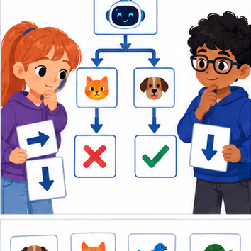
THINKER MISSION
Use divide-and-check to locate a faulty branch.
Thinker name and date:
Readiness for the connected explanation
For capacity 9 and used 2, what should remaining return?
This week’s end goal
By the end, I can test a function with expected values that distinguish a particular bug.
Student lesson · 2 of 18
Notice the evidence
Investigate the supplied Debugging Strategies case. Separate observations, given facts and assumptions before choosing an explanation.
PICTURE STORY
Notice → Predict → Explain
Begin with visible evidence. Do not explain more than the picture and information support.
Start with this puzzle
MYSTERY
The learners must use debugging strategies to solve a problem. What information do they have? What decision or calculation do they make? What would count as evidence that it worked?
Three observations (what you can point to):
My prediction and the clue supporting it:
A closer explanation
A function can pass one example by coincidence. Start with a written rule, calculate expected results independently, and include ordinary, zero and boundary cases.
We will test a subtraction function under the contract 0 <= used <= capacity.
Student lesson · 3 of 18
See how it works
Follow the mechanism for Debugging Strategies. Connect each labelled input, deciding step and result.
VISUAL MECHANISM
Input → Process → Output
Trace the information. At each stage, ask what changed and how you could test it.
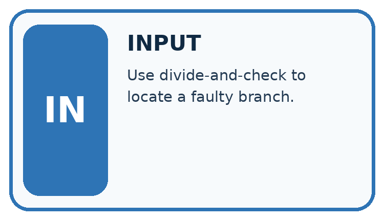
↓
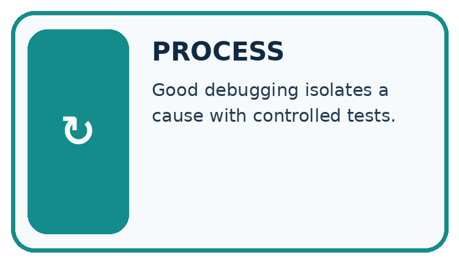
↓
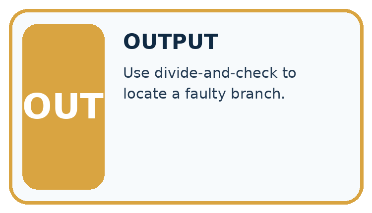
Which stage could fail even when the other two are correct? Explain:
A closer explanation
def remaining(capacity, used):
return capacity - used
cases = [(8, 3, 5), (8, 8, 0), (8, 0, 8)]
for capacity, used, expected in cases:
actual = remaining(capacity, used)
print(actual == expected)Follow the evidence
Each parenthesized group is a tuple, an ordered group of values. The loop unpacks each group into three names. Equality compares the actual result to the independently calculated expected result.
The worked script prints True three times. An assert actual == expected could instead stop at the first mismatch with AssertionError.
Give each test a job
A useful test includes an input and an answer calculated from the written rule before the program runs. For 8 spaces with 3 used, expect 5 left. For 8 used, expect 0. For none used, expect 8.
These cases ask different questions. An incorrect addition rule happens to pass the unused case because adding zero and subtracting zero give the same result. That is why one passing example is weak evidence.
Connect the picture and the explanation
Point to the input, the deciding step and the result in this week’s visual. Explain the same step in ordinary words. A picture helps when you can say what each part represents.
Student lesson · 4 of 18
Compare the cases
Compare the supplied cases for Debugging Strategies. Identify the detail that changes the conclusion.
The case to investigate
CASE GALLERY
Four Tests, Four Kinds of Evidence
A system is not understood until it survives more than one comfortable example.


The normal case
NORMAL CASE: predict and name evidence. BOUNDARY CASE: predict and name evidence.


Check missing information
MISSING INFORMATION: predict and name evidence. TRANSFER CASE: predict and name evidence.
Which case is most likely to reveal a hidden assumption? Why?
Change one thing in the pictured case
Change one thing
Change: Repair the body to bundle_count*6+loose.
Predicted result
Prediction: Expected results for (2,1),(0,3),(2,0) are 13,3,12.
Why the result follows
Reason: Only bundles are groups of six; loose books are counted individually.
Student lesson · 5 of 18
Words that unlock the idea
Use the vocabulary of Debugging Strategies to explain a concrete decision, rather than only memorising definitions.
VOCABULARY LAB
Words You Can Use to Reason
A definition matters when you can recognize the idea, use it, and contrast it with a near-miss.
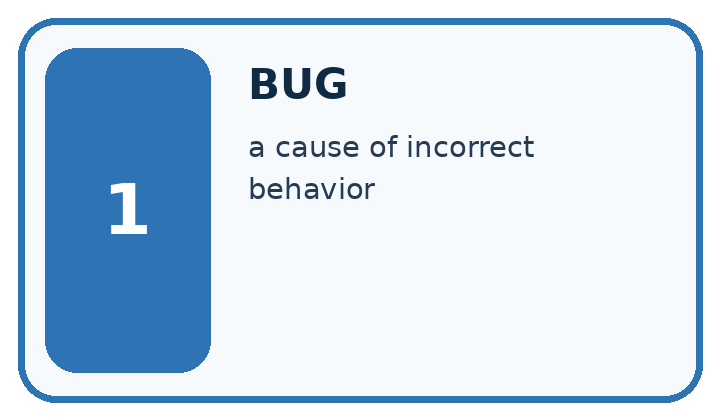
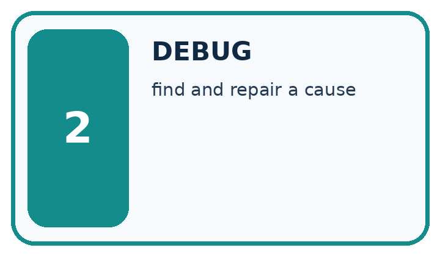
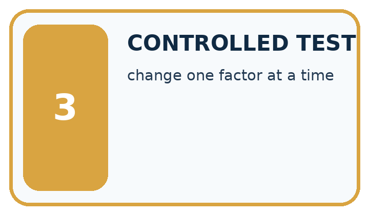
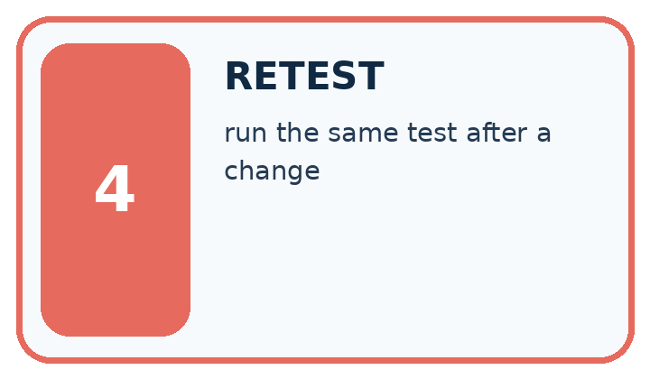
| Word | My own example | Not this / boundary |
|---|---|---|
| bug | A defect that makes a program behave differently from its intended specification. | |
| debug | Find and repair the cause of a program's incorrect behaviour. | |
| controlled test | A test with specified inputs, conditions and expected measurements. | |
| retest | Run a test again after a change or under specified new conditions. |
Words used in the closer explanation
| Word | Meaning |
|---|---|
| Test case | Inputs and an expected result |
| Boundary | An edge of a permitted range |
| Regression | A previously working case that fails after a change |
| Assertion | A check that raises an error when its condition is false |
Student lesson · 6 of 18
Follow a worked example
Follow the worked trace for Debugging Strategies, predict a step, then compare with its explanation.
WORKED EVIDENCE
Reason Step by Step
Predict first. Then check each step. A correct answer without visible reasoning is incomplete evidence.
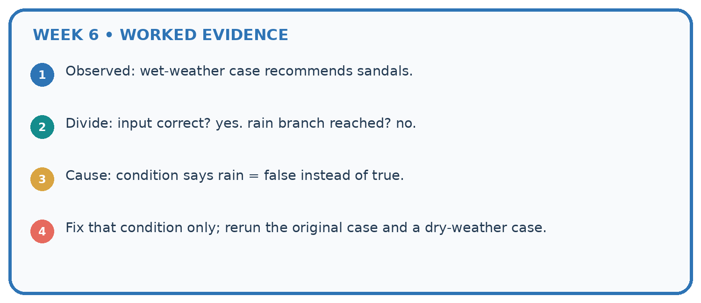
1. Observed: wet-weather case recommends sandals.
2. Divide: input correct? yes. rain branch reached? no.
3. Cause: condition says rain = false instead of true.
4. Fix that condition only; rerun the original case and a dry-weather case.
Recalculate, retrace, or restate the reasoning in your own representation:
CHECK Did the evidence answer the exact question? Did the total, path, or source record stay consistent?
A closer explanation
Learn from the worked case
Cover the result before checking it. Say what is given, choose the procedure, and follow one step at a time. Then uncover the result and explain your first mismatch. Ask why a step is allowed, not only what number it produces.
A pictorial worked case: Debugging Strategies
A fictional shelf function should count books in complete bundles plus loose books.
The facts we will use
Supplied facts
Correct definition: shelf(bundle_count,loose) returns bundle_count*6+loose.
Supplied facts
Faulty copied body returns (bundle_count+loose)*6. Predict tests before running.


Read the picture one step at a time
Why this result follows
Why the result follows
Test cases need not all expose the same error. Here loose books must be added after multiplying bundles. A zero-loose case cannot distinguish the two formulas because multiplying zero loose books changes nothing.
Keep expected and actual columns so an observed output does not quietly become its own expected answer.
What this example does not establish
Keep the stated limit
These three tests check a specified formula and bug; they do not prove correct handling of every type or invalid request.
Keep the stated limit
Read the labelled picture: Which test most directly isolates the handling of loose books, and what should it produce?
Keep the stated limit
Change one thing: Repair the body to bundle_count*6+loose. Predict the result before checking the explanation. What remains the same?
Student lesson · 7 of 18
Find and repair a mistake
Find the unsupported step in the Debugging Strategies claim and explain a repair using the supplied evidence.
Find the first error
ERROR DETECTIVE
Compare → Diagnose → Repair
Do not patch the answer. Find the earliest unsupported assumption, wrong step, or weak evidence.
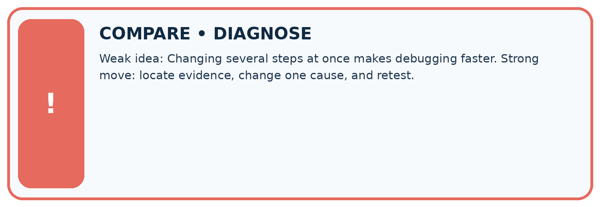
| Evidence record | Expected | Actual | Likely cause / next test |
|---|---|---|---|
| normal case | works | ||
| boundary case | stated rule | ||
| missing input | safe response | ||
| fresh transfer | generalizes |
Repair one cause. Why is this repair better than changing several things?
A closer explanation
Passing this small suite supports these particular cases. It neither proves every allowed input correct nor checks invalid input handling. A test outside the contract needs a separately specified expected behavior.
Student lesson · 8 of 18
Practise together
Practise Debugging Strategies with support, then explain the deciding step in your own words.
LOGIC STUDIO
Trace Before You Run
Block code, pseudocode, tables, and diagrams are different ways to expose the same reasoning.

SET evidence_record PREDICT expected_result RUN one normal case and one boundary case COMPARE actual_result with expected_result IF different: locate first cause; change one factor; RETEST EXPLAIN result, limitation, and next safe step
Trace one input. Which line changes the state or chooses a path?
A closer explanation
A faulty return capacity + used gives 11, 16 and 8. The unused case passes even though the rule is wrong. Repair the operator to subtraction and rerun all three cases.
Never change an expected result merely to match faulty output.
Practise with less help: Find a revealing case
Use workbook W2 for the connected example “Testing and debugging functions”. First fill the input and rule boxes. Try the middle steps before asking for a hint. After a hint, try the next step yourself.
| Plan | Do | Check |
|---|---|---|
| What is given? Which rule or procedure applies? | Record each intermediate step. | Does the result follow? What remains unknown? |
Explain your trace to a partner. Your partner points to one step to check. Swap roles on the next case. Each person writes their own explanation.
Check your reasoning
Use the worked case for Testing and debugging functions. Proposed explanation: “A successful run proves the conclusion”. Decide whether this explanation is supported.
Point to the step or supplied fact that decides; explain your repair if needed.
Answer on your own before discussion. If you are unsure, say which step you need help with.
Explain the picture
Which test most directly isolates the handling of loose books, and what should it produce?
This is supported practice. Keep the separately named independent case for an attempt before feedback.
Student lesson · 9 of 18
Run the investigation
Investigate Debugging Strategies. Record the prediction, actual observation or labelled paper trace, explanation and next test separately.
EVIDENCE LAB
Predict → Test → Record → Explain
Keep expected and actual results separate. Surprises are useful data when recorded honestly.
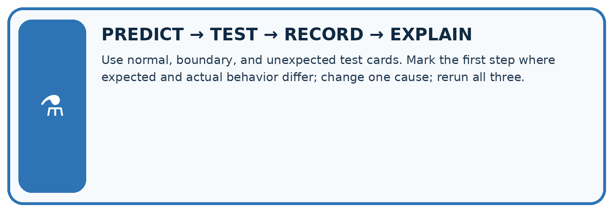
Use normal, boundary, and unexpected test cards. Mark the first step where expected and actual behavior differ; change one cause; rerun all three.
| Test / input | Prediction | Actual | Evidence / calculation | Change or keep? |
|---|---|---|---|---|
| normal | ||||
| boundary | ||||
| missing | ||||
| fresh transfer |
What did the hardest test teach you that the normal test did not?
Plan → try → check
Before trying: what do I expect, and why? While trying: which step could first go wrong? Afterwards: what did I actually observe, and what should change? Keep “not run” if you only traced the procedure.
Student lesson · 10 of 18
Build your understanding
Move from recall to tracing, diagnosis and transfer in Debugging Strategies. Explain why each step is justified.
MASTERY
From Knowing the Word to Owning the Idea
Move upward only when you can produce evidence without copying the worked example.

1 • NAME: Define the concept without repeating the textbook.
2 • TRACE: Show the information, state, branch, calculation, or evidence path.
3 • APPLY: Solve a different example independently.
4 • CHALLENGE: Find a boundary case, counterexample, or unfair outcome.
5 • EXPLAIN LIMITS: Say when the result should not be trusted or used alone.
My strongest evidence of independent understanding:
Student lesson · 11 of 18
Connect your project
Apply this week’s idea to Transparent Book Recommender. Keep an annotated decision and the evidence supporting it.
CUMULATIVE PROJECT
Transparent Book Recommender
Every week adds one inspectable piece. The system must show how it reached a result.
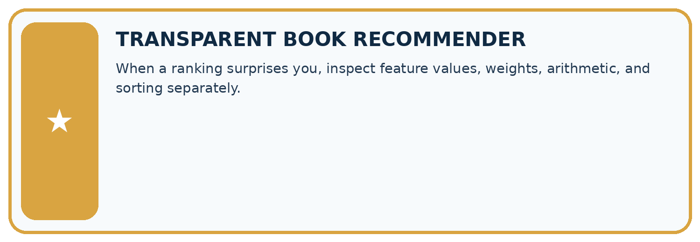
THIS WEEK’S CHECKPOINT When a ranking surprises you, inspect feature values, weights, arithmetic, and sorting separately.
Trace the system
SYSTEM MAP Reader need → allowed inputs → transparent rule or score → ranked candidates → explanation → test record → human decision
What will you add, change, or verify in the project this week?
What should remain under human control?
Responsible design
RESPONSIBLE DESIGN Collect only necessary information. Show uncertainty and limits. Never confuse a ranking with a fact about a person.
Evidence for your project
Test the recommender’s helper functions with normal, zero and boundary inputs before debugging the whole application.
Student lesson · 12 of 18
Show what you know
Use a genuinely new case for independent evidence. Previously discussed examples remain practice; use the separately named independent case before feedback.
Independent evidence
INDEPENDENT MASTERY PROOF
Explain • Transfer • Test • Defend
Complete this page without copying the worked example. Your reasoning matters more than decoration.
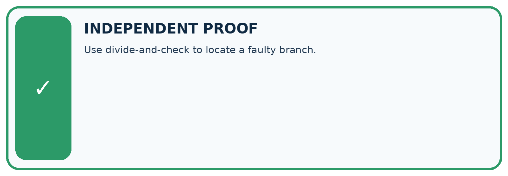
Try a more demanding case
CHALLENGE Use divide-and-check to locate a faulty branch.
1. My fresh example, trace, calculation, or design:
2. My evidence that it works (include a boundary or missing-data case):
3. One limitation, fairness concern, or situation needing human review:
Check your explanation
SELF-CHECK □ I explained the mechanism □ I used evidence □ I tested a fresh case □ I named a limitation □ I can answer ‘why?’
Student lesson · 13 of 18
Study a complete case
Revisit the complete Debugging Strategies case for supported practice. Repeated examples do not become fresh assessments.
Week 6 Worked case
Use the supplied details to practise the weekly concept before attempting the independent question. This case extends the illustrated lesson.
The situation
Award two points per matching trait. A bug awards two for every trait.
The question
Test one match and one nonmatch.
Worked explanation
Expected 2; buggy result 4. Put the addition inside the match condition. Test zero, one and two matches for 0,2,4.
Explain it in your own words
Which detail supports the answer, and why does it matter?
Trace the supplied case visually
Put the addition inside the condition
| Evidence or stage | Value or result |
|---|---|
| One matching trait | +2 |
| One nonmatching trait | +0 |
| Expected total | 2 |
| Buggy total | 4 because both were awarded points |
Award two points per matching trait. A bug awards two for every trait.
Test one match and one nonmatch.
Expected 2; buggy result 4. Put the addition inside the match condition. Test zero, one and two matches for 0,2,4.
Student lesson · 14 of 18
Try a new case independently
Attempt the reserved new case before feedback. Record support; the earlier examples below remain additional practice.
Independent case: Test a new function independently
Define stock(packs, loose) to return packs * 4 + loose. Create expected tests for (2, 3), (0, 3), (2, 0), then show which detects a faulty packs + loose body.
Attempt this case before feedback. Record any help. Earlier examples below are further practice; a case already practised with feedback cannot establish fresh transfer.
Week 6 Independent application
Close the worked explanation. Apply the idea to this different question without copying.
A loop should run four times but runs five. You change its colour and stopping condition at once. Which single change is relevant to test first?
My answer, with a trace, calculation or supporting evidence
Create and test
Change one relevant detail. Predict the result before testing. Include a boundary or missing-information case when it helps reveal a limit.
My changed input and expected result
Connect to your project
When a ranking surprises you, inspect feature values, weights, arithmetic, and sorting separately.
The evidence I will keep
Your teacher has the independent answer and scoring criteria. Complete the matching workbook week to keep your practice evidence together.
Transfer practice from the original programme
Intended score is 3 per matching trait. Bug: score starts at 3 and adds 3 for each match. Give expected and actual results for 0,1,2 matches and repair the cause.
Use feedback to improve
Attempt the independent case before hints. Record whether you worked alone, used a hint or followed a model. After feedback, fix the first unsupported step and explain why it changed.
A later check uses a changed case, not a copied answer.
Student lesson · 15 of 18
Your lesson route
Use this map to navigate Debugging Strategies, connect the goals to tasks and keep one evidence record for each attempt.
Start with this question: A fictional shelf function should count books in complete bundles plus loose books.
| By the end, I can | How I will show it |
|---|---|
| Design revealing tests for a function | Explain the deciding step, show a trace or test, and state one limit. |
| Compare expected and actual results | Explain the deciding step, show a trace or test, and state one limit. |
| Repair a defect and rerun earlier cases | Explain the deciding step, show a trace or test, and state one limit. |
Remember → watch and explain → try with help → investigate → try independently → keep project evidence. Your teacher may spread this lesson across several classes.
Keep your first prediction. Compare it with what the evidence shows and explain any change.
Student lesson · 16 of 18
Finish and return
Explain Debugging Strategies without notes, identify a remaining question and plan a later check with a changed case.
Close your notes. Explain this goal in your own words: Design revealing tests for a function
If you are unsure, return to the worked picture and explain one arrow. If you are ready, change an input or assumption and justify your prediction.
Save your workbook evidence. At the next review, try a different case before opening your old answer.
Student lesson · 17 of 18
Supported practice, repair and portfolio
Attempt supported questions before using hints or feedback. Review a missing building block, then keep the completed work.
Use this supported practice once, in the browser or on paper. Keep the reserved independent assessment for a separate first attempt before teacher feedback.
A fictional shelf function should count books in complete bundles plus loose books.
Practice 1: explain the deciding evidence
Which labelled step matches this detail? For (2,0), both return 12; a pass does not locate every bug.
1. Zero-bundle test
2. Expected normal test
3. Faulty trace
4. Nonrevealing test
Hint · try first
Hint if needed: Read the steps in the pictorial case. Match the supplied detail to the stage that performs or records it.
Feedback · compare after trying
After your attempt, compare with the supported explanation: Nonrevealing test For (2,0), both return 12; a pass does not locate every bug. Test cases need not all expose the same error.
Here loose books must be added after multiplying bundles. A zero-loose case cannot distinguish the two formulas because multiplying zero loose books changes nothing.
Keep expected and actual columns so an observed output does not quietly become its own expected answer.
Practice 2: explain the deciding evidence
Changed case · predict first
Changed-case practice: Repair the body to bundle_count*6+loose. Which conclusion is supported by the supplied facts?
1. We can decide the result without examining the changed input or the procedure.
2. Expected results for (2,1),(0,3),(2,0) are 13,3,12.
3. This one example guarantees correct results for every future input.
Hint · try first
Hint if needed: Use the changed condition and the deciding step in the pictorial trace. The answer must say what follows from those facts.
Feedback · compare after trying
After your attempt, compare with the supported explanation: Expected results for (2,1),(0,3),(2,0) are 13,3,12. Only bundles are groups of six; loose books are counted individually.
Repair a missing building block
Review Loops and Stopping (ai-2/5). Goal: Trace variable values before and after each loop iteration. Short practice: Why is report 0 correct for the original loop, and why is equality-only stopping risky here?.
Return to this week and explain what you changed.
Review Branching Logic (ai-2/3). Goal: Trace the selected branch in an if elif else chain. Short practice: Give expected labels for −1,0,10,11 and identify the equality boundary for Short..
Return to this week and explain what you changed.
Predict, run and debug
The browser lab lets you edit the supported Python examples already included in this lesson. Predict first, run, inspect the actual output or error, change one input, then run again.
Keep code, predictions, actual results and a reasoned revision together. On paper, label your result as a trace rather than an execution.
Keep your completed work
Use Download completed work in the hosted lesson to export your answers, reflections, practice feedback and code-run evidence. Open the HTML copy to read or print it.
Drafts stay in this browser when storage is available; clear drafts on a shared device.
Student lesson · 18 of 18
Visual concept journey
Explain each Debugging Strategies graphic using its labels, deciding evidence and relevant limitation.
01. Debugging Strategies: the case

A fictional shelf function should count books in complete bundles plus loose books. Supplied facts: Correct definition: shelf(bundle_count,loose) returns bundle_count*6+loose. Faulty copied body returns (bundle_count+loose)*6.
Predict tests before running.
Point to the given fact that matters most. Explain why it matters.
02. Follow the deciding steps

Expected normal test: For (2,1), correct result is 2×6+1=13. → Faulty trace: Copied code gives (2+1)×6=18. → Zero-bundle test: For (0,3), correct 3; copied code 18. → Nonrevealing test: For (2,0), both return 12; a pass does not locate every bug.
Point to each numbered stage and explain which recorded input it uses.
03. Expected outputs versus a specific bug

Expected outputs versus a specific bug. Test 1: Bundles = 2, Loose = 1, Correct = 13, Faulty = 18. Test 2: Bundles = 0, Loose = 3, Correct = 3, Faulty = 18. Test 3: Bundles = 2, Loose = 0, Correct = 12, Faulty = 12.
Read the labels and values. Explain the relationship the model shows.
04. Change one thing. Trace what follows.

Original case: For (2,0), both return 12; a pass does not locate every bug. Changed condition: Repair the body to bundle_count*6+loose. Expected result: Expected results for (2,1),(0,3),(2,0) are 13,3,12.
Reason: Only bundles are groups of six; loose books are counted individually.
Predict before checking the worked changed-case result. Name what changed and what the supplied facts allow you to conclude.
05. Connect the explanation to its limit

Test cases need not all expose the same error. Here loose books must be added after multiplying bundles. A zero-loose case cannot distinguish the two formulas because multiplying zero loose books changes nothing.
Keep expected and actual columns so an observed output does not quietly become its own expected answer.
Limit: These three tests check a specified formula and bug; they do not prove correct handling of every type or invalid request.
Explain the case, then point to a limit on the claim.
06. Make the idea visible in your project

Test the recommender’s helper functions with normal, zero and boundary inputs before debugging the whole application. Draw your input, deciding step, result and limit.
Supported question: Which test most directly isolates the handling of loose books, and what should it produce?
Draw your project trace and justify the deciding step using evidence.